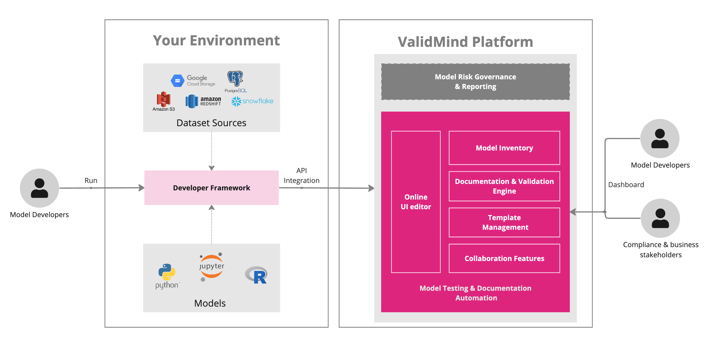

Model risk governance management
Our ValidMind model risk management platform offers an integrated platform to manage validation reports, track findings, and report on model risk compliance across your model portfolio. Its main purpose is to enable your organization to monitor and manage models effectively, focusing on mitigating risks, maintaining governance, and ensuring compliance throughout the entire enterprise.
The ValidMind AI Risk Platform
The ValidMind Platform UI provides a comprehensive suite of tools, guidelines, and best practices. You use the platform to review and evaluate models and model documentation to ensure they comply with organizational and regulatory requirements.

The platform employs a multi-tenant architecture, hosting the cloud-based user interface, APIs, databases, and internal services. The design ensures efficient resource utilization and offers a highly scalable solution for organizations of varying sizes.
With the ValidMind Platform, you can:
- Track your model inventory — Manage the model lifecycle, track the workflow status for models, plan for upcoming validation dates, and more.
- Work on validation projects — Collaborate with developers and validators to review documentation, add findings, keep track of review statuses, and generate validation reports.
- Configure workflows — Set up ValidMind to follow your existing model risk management processes, manage statuses for different parts of the workflow, and get an end-to-end view of workflows and who is involved.
- Use, create, or edit tests, test suites, and templates — Create and/or configure required validation tests, test suites, and documentation templates for specific model use cases, tailoring it to your own specific needs.
- Integrate with your stack — Import and export model documentation and validation reports.
Regulatory requirements
ValidMind’s platform is designed to cater to the regulatory compliance and model risk management (MRM) requirements of financial institutions, facilitating enhanced compliance with government regulations, policies concerning MRM, and emerging legislations addressing AI model risk, including risks associated with the use of large language models (LLMs).
Examples of regulations or policies include:
SR 11-7: Guidance on Model Risk Management
The Supervisory Guidance on model risk management issued by the Board of Governors of the Federal Reserve System and the Office of the Comptroller of the Currency in the United States in 2011. It provides comprehensive guidance to financial institutions on developing and maintaining a robust model risk management framework, covering aspects like model development, implementation, use, and validation. SR 11-7 is widely recognized and has become a benchmark in the industry for model risk management practices.
SR 11-7 outlines these core requirements:
- Model Risk Management
-
- Identify and mitigate risks associated with incorrect or inappropriate model usage, outputs, or implementation errors.
- Encourage “effective challenge” to identify model limitations and propose necessary changes.
- Consider materiality in model risk management based on the extent of model usage and its impact on the organization’s financial condition.
- Model Development, Implementation, and Use
-
- Develop with a clear statement of purpose, sound design, theory, and logic.
- Assess rigorously data quality and relevance, robust methodologies, and appropriate documentation.
- Test to ensure accuracy, robustness, stability, and to evaluate limitations and assumptions.
- Model Validation
-
- Be an integral part for managing model risk, ensuring models perform as intended.
- Identify and address potential errors or misuses.
- Governance, Policies, and Controls
-
- Establish a sound governance framework to oversee model risk management.
- Implement policies and controls for appropriate use and validation of models.
The regulation also mandates ongoing monitoring and periodic reviews to ensure models remain valid and effective.
SS1/23 – Model Risk Management Principles for Banks
A policy issued by the Prudential Regulation Authority (PRA) in the UK. It encapsulates the final model risk management principles following feedback on the earlier consultation paper CP6/22. The statement provides guidelines for banks in the UK on managing model risk effectively, with particular emphasis on strategic planning and technical capabilities. It outlines principles and amendments, like clarifications on model complexity factors, senior management function responsibilities, and inclusion of dynamic adjustments in model change management, aiming to standardize MRM practices across UK banks and foster the safe adoption of emerging technologies, such as machine learning, artificial intelligence, and large language models (LLMs).
SS1/23 outlines these core principles:
- Model Identification and Model Risk Classification
-
- Ensure a structured approach to accurately identify and categorize models within the model risk management (MRM) framework.
- Facilitate the proper management and oversight of models, aiding in the alignment of model risk management efforts with organizational risks and objectives.
- Governance
-
- Establish a structured oversight mechanism for effective model risk management, delineating clear responsibilities and authorities.
- Ensure accountability, transparency, and effective communication within the organization regarding model risks and controls.
- Model Development, Implementation, and Use
-
- Emphasize the correct development, deployment, and utilization of models as per the guidelines laid down in the MRM framework.
- Ensure models are developed and utilized in a manner consistent with their intended purposes and within acceptable risk boundaries.
- Independent Model Validation
-
- Stress the importance of independent validation to ascertain model performance, accuracy, and identify potential issues.
- Provide an objective assessment of models to ensure they are functioning as intended and to identify any potential areas of improvement or correction.
- Model Risk Mitigants
-
- Underline the necessity for measures to mitigate risks associated with model use, including the identification and implementation of controls.
- Help in reducing the potential adverse impact of model risks on the organization’s financial condition, reputation, and regulatory compliance.
The regulation encourages a proportionate application of these principles based on the size and complexity of the institution.
Around the globe
Other, similar guidelines and policies that our platform is designed to help you with include:
Guideline-E23: Enterprise-Wide Model Risk Management for Deposit-Taking Institutions
Issued by the Office of the Superintendent of Financial Institutions (OSFI) in Canada, it outlines minimum prudent practices for model development, review, approval, use, and modification.
Principles for Model Risk Management
Issued by the Financial Services Agency (FSA) in Japan in June 2021, this document was finalized after a consultation period and outlines principles for managing model risk.
Meeting regulatory requirements with ValidMind
ValidMind, as a robust tool for implementing Model Risk Management (MRM) best practices, including the three lines of defense, significantly aids organizations in adhering to the regulatory guidelines set forth by SR 11:7 and SS1/23.
- First line of defense — model developers
- ValidMind offers a suite of tools for model developers, facilitating thorough documentation and rigorous testing of models, aligning with the regulatory expectations of both SR 11:7 and SS1/23, particularly for models under regulatory purview.
- Second line of defense — model validators
- The platform empowers model validators with the ability to independently validate models ensuring adherence to the organization’s MRM principles throughout the model lifecycle, a core requirement of these regulations.
- Third line of defense — auditors
- Enabling internal and external audits provides an independent and objective assurance to the organization by assessing the effectiveness and efficiency of controls within the model risk management framework. It evaluates how well the first and second lines of defense are functioning, ensuring adherence to regulatory and organizational standards, thereby promoting a robust model risk management environment.
- Model inventory
- The Model Inventory feature encapsulates a centralized repository for all models, aiding in streamlined tracking, management, and monitoring, simplifying compliance with the inventory mandates specified in SR 11:7 and SS1/23.
- Lifecycle management and custom workflows
- ValidMind’s capabilities extend to effective model lifecycle management through configurable workflows. This structured approach to managing model risks across various lifecycle stages significantly aids in meeting the rigorous management and oversight expectations set by SR 11:7 and SS1/23.

- Model documentation automation
- By automating model documentation through configurable templates and test plans, ValidMind ensures consistent and accurate documentation capture, directly aligning with the documentation standards stipulated in these regulatory guidelines.
- Model validation and approval
- With automated validation features and comprehensive risk assessment tools, ValidMind aligns with the effective validation criteria and thorough risk evaluation mandates of SR 11:7 and SS1/23.
- Communication and tracking
- The built-in communication and tracking functionality of ValidMind facilitates seamless collaboration and understanding among stakeholders regarding model usage, limitations, and risks, fostering a collaborative environment as encouraged by these regulations.
By integrating these features, ValidMind provides a comprehensive platform that not only simplifies the path to compliance with SR 11:7 and SS1/23 but also embeds a culture of rigorous and transparent model risk management within the organization.
Ready to try out ValidMind?
Our Quickstart is the quickest and easiest way to try out our product features.